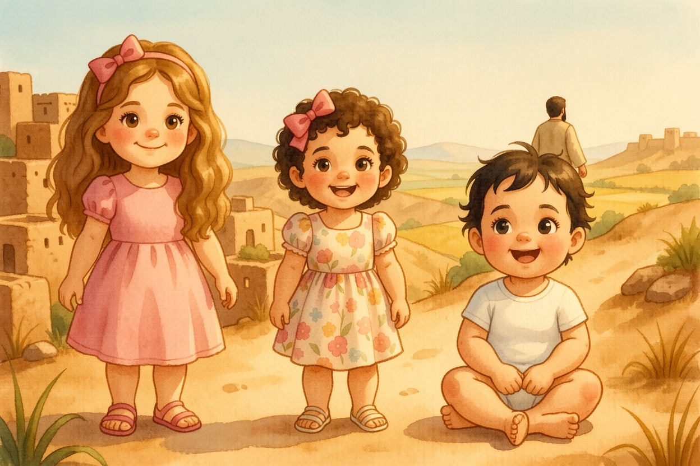
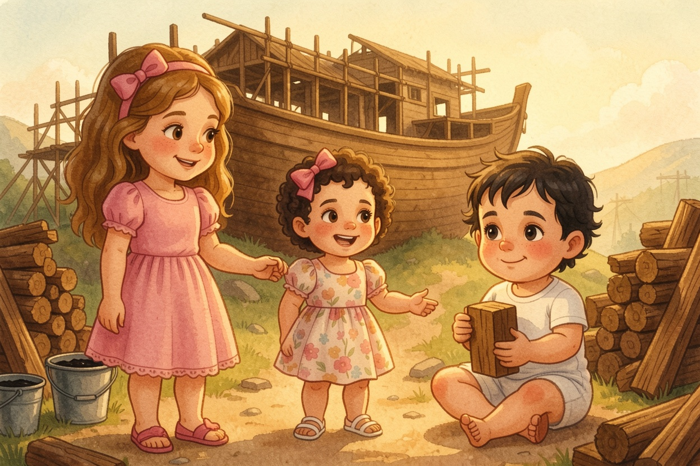
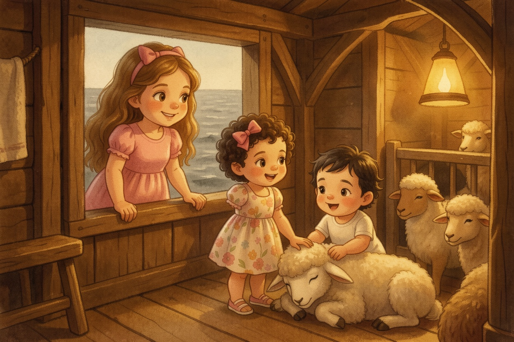
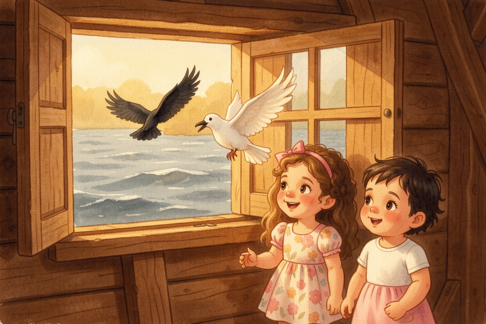
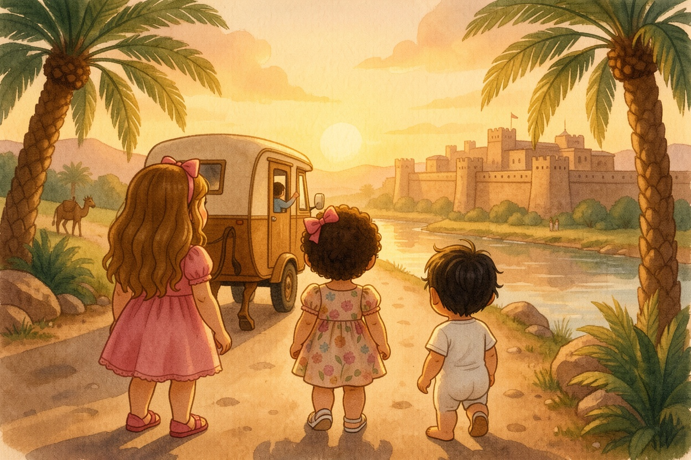

A Parasha Book · Parashat Noach
נֹחַ
The Ark, the Dove and the Rainbow
starring Aviya, Tzofia & Lielle
Meet the explorers

Aviya, Tzofia & Lielle are about to climb into Parashat Noach (Genesis 6:9–11:32).
Everything they see on these pages comes straight from the pesukim — the plain meaning, the peshat.
Each picture page is followed by the words of the Torah it comes from, in Hebrew and English, and a question to look for in the text.

1A Man Who Walked with God
Bereshit 6:9-13A Man Who Walked with God
This time, when Aviya opened the Chumash, a warm wind blew out of the pages — and the sisters were standing on a dusty hill. The land below was full of people, but it was full of chamas, too — people grabbing and hurting. "That's not how the world is supposed to be," said Tzofia. Aviya read: Noach was a righteous man, wholehearted in his generation. Noach walked with God. He had three sons: Shem, Cham and Yefet.
Look closely: What were the names of Noach's three sons?
Shem, Cham and Yefet (6:10).
From the Torah · Bereshit 6:9-13
9 אֵלֶּה תּוֹלְדֹת נֹחַ נֹחַ אִישׁ צַדִּיק תָּמִים הָיָה בְּדֹרֹתָיו אֶת־הָאֱלֹהִים הִתְהַלֶּךְ־נֹחַ׃
6:9 These are the generations of Noaĥ: Noaĥ was a just man and perfect in his generations, and Noaĥ walked with God.
10 וַיּוֹלֶד נֹחַ שְׁלֹשָׁה בָנִים אֶת־שֵׁם אֶת־חָם וְאֶת־יָפֶת׃
6:10 And Noaĥ begot three sons, Shem, Ḥam, and Yefet.
11 וַתִּשָּׁחֵת הָאָרֶץ לִפְנֵי הָאֱלֹהִים וַתִּמָּלֵא הָאָרֶץ חָמָס׃
6:11 The earth also was corrupt before God, and the earth was filled with violence.
12 וַיַּרְא אֱלֹהִים אֶת־הָאָרֶץ וְהִנֵּה נִשְׁחָתָה כִּי־הִשְׁחִית כָּל־בָּשָׂר אֶת־דַּרְכּוֹ עַל־הָאָרֶץ׃
6:12 And God looked upon the earth, and, behold, it was corrupt; for all flesh had corrupted its way upon the earth.
13 וַיֹּאמֶר אֱלֹהִים לְנֹחַ קֵץ כָּל־בָּשָׂר בָּא לְפָנַי כִּי־מָלְאָה הָאָרֶץ חָמָס מִפְּנֵיהֶם וְהִנְנִי מַשְׁחִיתָם אֶת־הָאָרֶץ׃
6:13 And God said to Noaĥ, The end of all flesh is come before Me; for the earth is filled with violence through them; and, behold, I will destroy them with the earth.

2Build an Ark!
Bereshit 6:14-16Build an Ark!
God told Noach exactly how to build the ark: gopher wood, with rooms inside, covered with pitch inside and out. Three hundred cubits long, fifty wide, thirty high. A tzohar for light. A door in the side. And three decks: lower, second and third. Aviya showed Tzofia a cubit — from her elbow to her fingertips. "Three hundred of those?!" Tzofia gasped. Lielle banged two pieces of wood together to help.
Look closely: How many decks did the ark have?
Three — lower, second and third (6:16).
From the Torah · Bereshit 6:14-16
14 עֲשֵׂה לְךָ תֵּבַת עֲצֵי־גֹפֶר קִנִּים תַּעֲשֶׂה אֶת־הַתֵּבָה וְכָפַרְתָּ אֹתָהּ מִבַּיִת וּמִחוּץ בַּכֹּפֶר׃
6:14 Make thee an ark of gofer wood; rooms shalt thou make in the ark, and shalt pitch it within and without with pitch.
15 וְזֶה אֲשֶׁר תַּעֲשֶׂה אֹתָהּ שְׁלֹשׁ מֵאוֹת אַמָּה אֹרֶךְ הַתֵּבָה חֲמִשִּׁים אַמָּה רָחְבָּהּ וּשְׁלֹשִׁים אַמָּה קוֹמָתָהּ׃
6:15 And this is the fashion of which thou shalt make it: the length of the ark shall be three hundred cubits, the breadth of it fifty cubits, and the height of it thirty cubits.
16 צֹהַר תַּעֲשֶׂה לַתֵּבָה וְאֶל־אַמָּה תְּכַלֶנָּה מִלְמַעְלָה וּפֶתַח הַתֵּבָה בְּצִדָּהּ תָּשִׂים תַּחְתִּיִּם שְׁנִיִּם וּשְׁלִשִׁים תַּעֲשֶׂהָ׃
6:16 A window shalt thou make to the ark, and to a cubit shalt thou finish it above; and the door of the ark shalt thou set in its side; with lower, second, and third stories shalt thou make it.
Noach went into the ark with his sons, his wife, and his sons' wives, because of the waters of the flood. And then the animals came — two by two, male and female, just as God had commanded. Two elephants. Two giraffes, ducking their heads. Two tiny ladybugs. Tzofia counted them all: "Two! Two! Two!" Lielle waved at a pair of monkeys, and the monkeys waved back.
Look closely: Who went into the ark with Noach?
His sons, his wife and his sons' wives (7:7).
From the Torah · Bereshit 7:7-9
7 וַיָּבֹא נֹחַ וּבָנָיו וְאִשְׁתּוֹ וּנְשֵׁי־בָנָיו אִתּוֹ אֶל־הַתֵּבָה מִפְּנֵי מֵי הַמַּבּוּל׃
7:7 And Noaĥ went in, and his sons, and his wife, and his sons’ wives with him, into the ark, because of the waters of the flood.
8 מִן־הַבְּהֵמָה הַטְּהוֹרָה וּמִן־הַבְּהֵמָה אֲשֶׁר אֵינֶנָּה טְהֹרָה וּמִן־הָעוֹף וְכֹל אֲשֶׁר־רֹמֵשׂ עַל־הָאֲדָמָה׃
7:8 Of clean beasts, and of beasts that are not clean, and of birds and of everything that creeps upon the earth,
9 שְׁנַיִם שְׁנַיִם בָּאוּ אֶל־נֹחַ אֶל־הַתֵּבָה זָכָר וּנְקֵבָה כַּאֲשֶׁר צִוָּה אֱלֹהִים אֶת־נֹחַ׃
7:9 there went in two and two to Noaĥ into the ark, male and female, as God had commanded Noaĥ.
Bereshit 7:11-16The Door Closes
In the six hundredth year of Noach's life, in the second month, on the seventeenth day, all the fountains of the great deep burst open and the windows of the sky opened up. Rain fell for forty days and forty nights. The sisters hurried up the ramp. Then Aviya read a line that made her stop: "And Hashem shut him in." The great door closed behind them — safe and dry.
Look closely: Who shut the door of the ark?
Hashem shut him in (7:16).
From the Torah · Bereshit 7:11-16
11 בִּשְׁנַת שֵׁשׁ־מֵאוֹת שָׁנָה לְחַיֵּי־נֹחַ בַּחֹדֶשׁ הַשֵּׁנִי בְּשִׁבְעָה־עָשָׂר יוֹם לַחֹדֶשׁ בַּיּוֹם הַזֶּה נִבְקְעוּ כָּל־מַעְיְנֹת תְּהוֹם רַבָּה וַאֲרֻבֹּת הַשָּׁמַיִם נִפְתָּחוּ׃
7:11 In the six hundredth year of Noaĥ’s life, in the second month, the seventeenth day of the month, on that same day were all the fountains of the great deep broken open, and the windows of heaven were opened.
12 וַיְהִי הַגֶּשֶׁם עַל־הָאָרֶץ אַרְבָּעִים יוֹם וְאַרְבָּעִים לָיְלָה׃
7:12 And the rain was upon the earth forty days and forty nights.
13 בְּעֶצֶם הַיּוֹם הַזֶּה בָּא נֹחַ וְשֵׁם־וְחָם וָיֶפֶת בְּנֵי־נֹחַ וְאֵשֶׁת נֹחַ וּשְׁלֹשֶׁת נְשֵׁי־בָנָיו אִתָּם אֶל־הַתֵּבָה׃
7:13 In the selfsame day Noaĥ, and Shem, and Ḥam, and Yefet, the sons of Noaĥ, and Noaĥ’s wife, and the three wives of his sons with them, entered into the ark;
14 הֵמָּה וְכָל־הַחַיָּה לְמִינָהּ וְכָל־הַבְּהֵמָה לְמִינָהּ וְכָל־הָרֶמֶשׂ הָרֹמֵשׂ עַל־הָאָרֶץ לְמִינֵהוּ וְכָל־הָעוֹף לְמִינֵהוּ כֹּל צִפּוֹר כָּל־כָּנָף׃
7:14 they, and every beast after its kind, and all the cattle after their kind, and every creeping thing that creeps on the earth after its kind, and every bird after its kind, every bird of every sort.
15 וַיָּבֹאוּ אֶל־נֹחַ אֶל־הַתֵּבָה שְׁנַיִם שְׁנַיִם מִכָּל־הַבָּשָׂר אֲשֶׁר־בּוֹ רוּחַ חַיִּים׃
7:15 And they went in to Noaĥ into the ark, two and two of all flesh in which is the breath of life.
16 וְהַבָּאִים זָכָר וּנְקֵבָה מִכָּל־בָּשָׂר בָּאוּ כַּאֲשֶׁר צִוָּה אֹתוֹ אֱלֹהִים וַיִּסְגֹּר יְהוָה בַּעֲדוֹ׃
7:16 And they that went in, went in male and female of all flesh, as God had commanded him: and the Lord shut him in.

5The Ark Floats
Bereshit 7:17-24The Ark Floats
The water rose and rose and lifted the ark right off the ground. The ark floated on the face of the waters, higher than the tallest mountains. Inside it was warm and noisy — mooing and roaring and chirping. The sisters peeked out of the tzohar at the gray water everywhere. Aviya read that the waters swelled on the earth for one hundred and fifty days. "That's a long time to be on a boat," said Tzofia.
Look closely: How long did the waters swell on the earth?
One hundred and fifty days (7:24).
From the Torah · Bereshit 7:17-24
17 וַיְהִי הַמַּבּוּל אַרְבָּעִים יוֹם עַל־הָאָרֶץ וַיִּרְבּוּ הַמַּיִם וַיִּשְׂאוּ אֶת־הַתֵּבָה וַתָּרָם מֵעַל הָאָרֶץ׃
7:17 And the flood was forty days upon the earth; and the waters increased, and bore up the ark, and it was raised above the earth.
18 וַיִּגְבְּרוּ הַמַּיִם וַיִּרְבּוּ מְאֹד עַל־הָאָרֶץ וַתֵּלֶךְ הַתֵּבָה עַל־פְּנֵי הַמָּיִם׃
7:18 And the waters prevailed, and were increased greatly upon the earth; and the ark went upon the face of the waters.
19 וְהַמַּיִם גָּבְרוּ מְאֹד מְאֹד עַל־הָאָרֶץ וַיְכֻסּוּ כָּל־הֶהָרִים הַגְּבֹהִים אֲשֶׁר־תַּחַת כָּל־הַשָּׁמָיִם׃
7:19 And the waters prevailed exceedingly upon the earth; and all the high mountains, that were under the whole heaven, were covered.
20 חֲמֵשׁ עֶשְׂרֵה אַמָּה מִלְמַעְלָה גָּבְרוּ הַמָּיִם וַיְכֻסּוּ הֶהָרִים׃
7:20 Fifteen cubits upward did the waters prevail; and the mountains were covered.
21 וַיִּגְוַע כָּל־בָּשָׂר הָרֹמֵשׂ עַל־הָאָרֶץ בָּעוֹף וּבַבְּהֵמָה וּבַחַיָּה וּבְכָל־הַשֶּׁרֶץ הַשֹּׁרֵץ עַל־הָאָרֶץ וְכֹל הָאָדָם׃
7:21 And all flesh perished that moved upon the earth, both of birds, and of cattle, and of beasts, and of every creeping thing that creeps upon the earth, and all mankind:
22 כֹּל אֲשֶׁר נִשְׁמַת־רוּחַ חַיִּים בְּאַפָּיו מִכֹּל אֲשֶׁר בֶּחָרָבָה מֵתוּ׃
7:22 all in whose nostrils was the breath of life, of all that was on the dry land, died.
23 וַיִּמַח אֶת־כָּל־הַיְקוּם אֲשֶׁר עַל־פְּנֵי הָאֲדָמָה מֵאָדָם עַד־בְּהֵמָה עַד־רֶמֶשׂ וְעַד־עוֹף הַשָּׁמַיִם וַיִּמָּחוּ מִן־הָאָרֶץ וַיִשָּׁאֶר אַךְ־נֹחַ וַאֲשֶׁר אִתּוֹ בַּתֵּבָה׃
7:23 And He destroyed every living substance which was upon the face of the ground, both man, and cattle, and creeping things, and the birds of the heaven; they were destroyed from the earth: and Noaĥ only remained alive, and they that were with him in the ark.
24 וַיִּגְבְּרוּ הַמַּיִם עַל־הָאָרֶץ חֲמִשִּׁים וּמְאַת יוֹם׃
7:24 And the waters prevailed upon the earth a hundred and fifty days.
Bereshit 8:1-4God Remembered Noach
Then God remembered Noach and all the animals in the ark. He sent a wind over the earth, and the waters began to go down. The fountains of the deep closed, and the rain stopped. Bump! The ark stopped moving. Aviya read: in the seventh month, on the seventeenth day, the ark came to rest on the mountains of Ararat. Lielle clapped. Tzofia shouted, "We landed!"
Look closely: Where did the ark come to rest?
On the mountains of Ararat (8:4).
From the Torah · Bereshit 8:1-4
1 וַיִּזְכֹּר אֱלֹהִים אֶת־נֹחַ וְאֵת כָּל־הַחַיָּה וְאֶת־כָּל־הַבְּהֵמָה אֲשֶׁר אִתּוֹ בַּתֵּבָה וַיַּעֲבֵר אֱלֹהִים רוּחַ עַל־הָאָרֶץ וַיָּשֹׁכּוּ הַמָּיִם׃
8:1 And God remembered Noaĥ, and every living thing, and all the cattle that were with him in the ark: and God made a wind to pass over the earth, and the waters were assuaged;
2 וַיִּסָּכְרוּ מַעְיְנֹת תְּהוֹם וַאֲרֻבֹּת הַשָּׁמָיִם וַיִּכָּלֵא הַגֶּשֶׁם מִן־הַשָּׁמָיִם׃
8:2 the fountains also of the deep and the windows of heaven were stopped,
3 וַיָּשֻׁבוּ הַמַּיִם מֵעַל הָאָרֶץ הָלוֹךְ וָשׁוֹב וַיַּחְסְרוּ הַמַּיִם מִקְצֵה חֲמִשִּׁים וּמְאַת יוֹם׃
8:3 and the rain from heaven was restrained; and the waters receded from the earth continually: and after the end of a hundred and fifty days the waters were abated.
4 וַתָּנַח הַתֵּבָה בַּחֹדֶשׁ הַשְּׁבִיעִי בְּשִׁבְעָה־עָשָׂר יוֹם לַחֹדֶשׁ עַל הָרֵי אֲרָרָט׃
8:4 And the ark rested in the seventh month, on the seventeenth day of the month, upon the mountains of Ararat.

7The Raven and the Dove
Bereshit 8:6-9The Raven and the Dove
After forty days, Noach opened the window of the ark and sent out a raven. It flew back and forth, back and forth, until the water dried up. Then he sent out a dove. But the dove found no place to rest her foot, because water still covered the earth. So she came back. Tzofia held her breath as Noach reached out his hand and brought the dove back in. "She's safe," whispered Aviya.
Look closely: Why did the dove come back the first time?
She found no resting place for her foot, because water was still on the face of the earth (8:9).
From the Torah · Bereshit 8:6-9
6 וַיְהִי מִקֵּץ אַרְבָּעִים יוֹם וַיִּפְתַּח נֹחַ אֶת־חַלּוֹן הַתֵּבָה אֲשֶׁר עָשָׂה׃
8:6 And it came to pass at the end of forty days, that Noaĥ opened the window of the ark which he had made:
7 וַיְשַׁלַּח אֶת־הָעֹרֵב וַיֵּצֵא יָצוֹא וָשׁוֹב עַד־יְבֹשֶׁת הַמַּיִם מֵעַל הָאָרֶץ׃
8:7 and he sent forth the raven, which went forth to and fro, until the waters were dried up from off the earth.
8 וַיְשַׁלַּח אֶת־הַיּוֹנָה מֵאִתּוֹ לִרְאוֹת הֲקַלּוּ הַמַּיִם מֵעַל פְּנֵי הָאֲדָמָה׃
8:8 Also he sent forth the dove from him, to see if the waters were abated from the face of the ground;
9 וְלֹא־מָצְאָה הַיּוֹנָה מָנוֹחַ לְכַף־רַגְלָהּ וַתָּשָׁב אֵלָיו אֶל־הַתֵּבָה כִּי־מַיִם עַל־פְּנֵי כָל־הָאָרֶץ וַיִּשְׁלַח יָדוֹ וַיִּקָּחֶהָ וַיָּבֵא אֹתָהּ אֵלָיו אֶל־הַתֵּבָה׃
8:9 but the dove found no rest for the sole of her foot, and she returned to him into the ark, for the waters were on the face of the whole earth: then he put out his hand, and took her, and pulled her in to him into the ark.
Bereshit 8:10-12An Olive Leaf!
Noach waited seven more days and sent the dove out again. In the evening, the dove came back — and in her mouth was a freshly plucked olive leaf! "Something is growing again!" shouted Tzofia. Lielle reached for the leaf. Noach waited another seven days and sent the dove out once more. This time she did not come back at all. "She found a home," said Aviya.
Look closely: What was in the dove's mouth?
A freshly plucked olive leaf (8:11).
From the Torah · Bereshit 8:10-12
10 וַיָּחֶל עוֹד שִׁבְעַת יָמִים אֲחֵרִים וַיֹּסֶף שַׁלַּח אֶת־הַיּוֹנָה מִן־הַתֵּבָה׃
8:10 And he waited yet another seven days; and again he sent forth the dove out of the ark;
11 וַתָּבֹא אֵלָיו הַיּוֹנָה לְעֵת עֶרֶב וְהִנֵּה עֲלֵה־זַיִת טָרָף בְּפִיהָ וַיֵּדַע נֹחַ כִּי־קַלּוּ הַמַּיִם מֵעַל הָאָרֶץ׃
8:11 and the dove came in to him in the evening; and, lo, in her mouth was an olive leaf plucked off: so Noaĥ knew that the waters were abated from off the earth.
12 וַיִּיָּחֶל עוֹד שִׁבְעַת יָמִים אֲחֵרִים וַיְשַׁלַּח אֶת־הַיּוֹנָה וְלֹא־יָסְפָה שׁוּב־אֵלָיו עוֹד׃
8:12 And he waited yet another seven days; and sent forth the dove; which returned not again to him any more.
Bereshit 8:15-20Out of the Ark
God said to Noach: "Go out of the ark — you, your wife, your sons and your sons' wives — and bring out every living thing with you." The big door opened. The animals poured out onto the dry, fresh land — running, hopping, flying. Tzofia ran too. Then Noach built an altar to Hashem and brought offerings. The sisters stood quietly and watched the smoke rise.
Look closely: What was the first thing Noach built after leaving the ark?
An altar to Hashem (8:20).
From the Torah · Bereshit 8:15-20
15 וַיְדַבֵּר אֱלֹהִים אֶל־נֹחַ לֵאמֹר׃
8:15 And God spoke to Noaĥ, saying,
16 צֵא מִן־הַתֵּבָה אַתָּה וְאִשְׁתְּךָ וּבָנֶיךָ וּנְשֵׁי־בָנֶיךָ אִתָּךְ׃
8:16 Go out of the ark, thou, and thy wife, and thy sons, and thy sons’ wives with thee.
17 כָּל־הַחַיָּה אֲשֶׁר־אִתְּךָ מִכָּל־בָּשָׂר בָּעוֹף וּבַבְּהֵמָה וּבְכָל־הָרֶמֶשׂ הָרֹמֵשׂ עַל־הָאָרֶץ הוצא [הַיְצֵא] אִתָּךְ וְשָׁרְצוּ בָאָרֶץ וּפָרוּ וְרָבוּ עַל־הָאָרֶץ׃
8:17 Bring out with thee every living thing that is with thee, of all flesh, both of birds, and of cattle, and of every creeping thing that creeps on the earth; that they may breed abundantly on the earth, and be fruitful, and multiply upon the earth.
18 וַיֵּצֵא־נֹחַ וּבָנָיו וְאִשְׁתּוֹ וּנְשֵׁי־בָנָיו אִתּוֹ׃
8:18 And Noaĥ went out, and his sons, and his wife, and his sons’ wives with him:
19 כָּל־הַחַיָּה כָּל־הָרֶמֶשׂ וְכָל־הָעוֹף כֹּל רוֹמֵשׂ עַל־הָאָרֶץ לְמִשְׁפְּחֹתֵיהֶם יָצְאוּ מִן־הַתֵּבָה׃
8:19 every beast, every creeping thing, and every bird, and whatever creeps on the earth, after their kinds, went out of the ark.
20 וַיִּבֶן נֹחַ מִזְבֵּחַ לַיהוָה וַיִּקַּח מִכֹּל הַבְּהֵמָה הַטְּהוֹרָה וּמִכֹּל הָעוֹף הַטָּהֹר וַיַּעַל עֹלֹת בַּמִּזְבֵּחַ׃
8:20 And Noaĥ built an altar to the Lord; and took of every clean beast, and of every clean bird, and offered burnt offerings on the altar.
Bereshit 9:12-16The Rainbow
Then God made a promise — a brit — with Noach and every living creature: never again would the waters become a flood to destroy all life. And He gave a sign: "My bow I have set in the cloud." A rainbow stretched across the whole sky. Tzofia named every color. Lielle reached up to grab it. "Every time we see one," said Aviya, "it's the sign of the promise."
Look closely: What is the rainbow a sign of?
God's covenant that the waters will never again become a flood to destroy all flesh (9:15).
From the Torah · Bereshit 9:12-16
12 וַיֹּאמֶר אֱלֹהִים זֹאת אוֹת־הַבְּרִית אֲשֶׁר־אֲנִי נֹתֵן בֵּינִי וּבֵינֵיכֶם וּבֵין כָּל־נֶפֶשׁ חַיָּה אֲשֶׁר אִתְּכֶם לְדֹרֹת עוֹלָם׃
9:12 And God said, This is the token of the covenant which I make between Me and you and every living creature that is with you, for perpetual generations:
13 אֶת־קַשְׁתִּי נָתַתִּי בֶּעָנָן וְהָיְתָה לְאוֹת בְּרִית בֵּינִי וּבֵין הָאָרֶץ׃
9:13 I have set My bow in the cloud, and it shall be for a token of a covenant between Me and the earth.
14 וְהָיָה בְּעַנְנִי עָנָן עַל־הָאָרֶץ וְנִרְאֲתָה הַקֶּשֶׁת בֶּעָנָן׃
9:14 And it shall come to pass, when I bring a cloud over the earth, that the bow shall be seen in the cloud:
15 וְזָכַרְתִּי אֶת־בְּרִיתִי אֲשֶׁר בֵּינִי וּבֵינֵיכֶם וּבֵין כָּל־נֶפֶשׁ חַיָּה בְּכָל־בָּשָׂר וְלֹא־יִהְיֶה עוֹד הַמַּיִם לְמַבּוּל לְשַׁחֵת כָּל־בָּשָׂר׃
9:15 and I will remember My covenant, which is between Me and you and every living creature of all flesh; and the waters shall no more become a flood to destroy all flesh.
16 וְהָיְתָה הַקֶּשֶׁת בֶּעָנָן וּרְאִיתִיהָ לִזְכֹּר בְּרִית עוֹלָם בֵּין אֱלֹהִים וּבֵין כָּל־נֶפֶשׁ חַיָּה בְּכָל־בָּשָׂר אֲשֶׁר עַל־הָאָרֶץ׃
9:16 And the bow shall be in the cloud; and I will look upon it, that I may remember the everlasting covenant between God and every living creature of all flesh that is upon the earth.
Bereshit 11:1-9A Tower to the Sky
Years later, the whole earth had one language and the same words. People settled in a valley in Shinar and baked bricks. "Let's build a city," they said, "and a tower with its top in the sky, and make a name for ourselves, so we won't be scattered." Hashem came down to see the city and the tower. He mixed up their language so they couldn't understand each other. "Brick!" said one. "Huh?" said another. And Hashem scattered them over the whole earth.
Look closely: Why was the city called Bavel?
Because there Hashem mixed up (balal) the language of all the earth (11:9).
From the Torah · Bereshit 11:1-9
1 וַיְהִי כָל־הָאָרֶץ שָׂפָה אֶחָת וּדְבָרִים אֲחָדִים׃
11:1 And the whole earth was of one language, and of one speech.
2 וַיְהִי בְּנָסְעָם מִקֶּדֶם וַיִּמְצְאוּ בִקְעָה בְּאֶרֶץ שִׁנְעָר וַיֵּשְׁבוּ שָׁם׃
11:2 And it came to pass, as they journeyed from the east, that they found a plain in the land of Shin῾ar; and they dwelt there.
3 וַיֹּאמְרוּ אִישׁ אֶל־רֵעֵהוּ הָבָה נִלְבְּנָה לְבֵנִים וְנִשְׂרְפָה לִשְׂרֵפָה וַתְּהִי לָהֶם הַלְּבֵנָה לְאָבֶן וְהַחֵמָר הָיָה לָהֶם לַחֹמֶר׃
11:3 And they said to one another, Come, let us make bricks, and burn them thoroughly. And they had brick for stone, and slime had they for mortar.
4 וַיֹּאמְרוּ הָבָה נִבְנֶה־לָּנוּ עִיר וּמִגְדָּל וְרֹאשׁוֹ בַשָּׁמַיִם וְנַעֲשֶׂה־לָּנוּ שֵׁם פֶּן־נָפוּץ עַל־פְּנֵי כָל־הָאָרֶץ׃
11:4 And they said, Come, let us build us a city and a tower, whose top may reach to heaven; and let us make us a name, lest we be scattered abroad upon the face of the whole earth.
5 וַיֵּרֶד יְהוָה לִרְאֹת אֶת־הָעִיר וְאֶת־הַמִּגְדָּל אֲשֶׁר בָּנוּ בְּנֵי הָאָדָם׃
11:5 And the Lord came down to see the city and the tower, which the children of men were building.
6 וַיֹּאמֶר יְהוָה הֵן עַם אֶחָד וְשָׂפָה אַחַת לְכֻלָּם וְזֶה הַחִלָּם לַעֲשׂוֹת וְעַתָּה לֹא־יִבָּצֵר מֵהֶם כֹּל אֲשֶׁר יָזְמוּ לַעֲשׂוֹת׃
11:6 And the Lord said, Behold, the people is one, and they have all one language; and this they begin to do: and now nothing will be withheld from them, which they have schemed to do.
7 הָבָה נֵרְדָה וְנָבְלָה שָׁם שְׂפָתָם אֲשֶׁר לֹא יִשְׁמְעוּ אִישׁ שְׂפַת רֵעֵהוּ׃
11:7 Come, let us go down, and there confound their language, that they may not understand one another’s speech.
8 וַיָּפֶץ יְהוָה אֹתָם מִשָּׁם עַל־פְּנֵי כָל־הָאָרֶץ וַיַּחְדְּלוּ לִבְנֹת הָעִיר׃
11:8 So the Lord scattered them abroad from there upon the face of all the earth: and they ceased to build the city.
9 עַל־כֵּן קָרָא שְׁמָהּ בָּבֶל כִּי־שָׁם בָּלַל יְהוָה שְׂפַת כָּל־הָאָרֶץ וּמִשָּׁם הֱפִיצָם יְהוָה עַל־פְּנֵי כָּל־הָאָרֶץ׃
11:9 Therefore is the name of it called Bavel; because the Lord did there confound the language of all the earth: and from thence did the Lord scatter them abroad upon the face of all the earth.

12Someone New
Bereshit 11:26-32Someone New
Many generations later, the Chumash told of a family: Terach, and his sons Avram, Nachor and Haran. Avram married Sarai. Terach took Avram, Sarai and his grandson Lot and left Ur Kasdim to go to the land of Canaan — and they came as far as Charan, and settled there. The page began to glow. Aviya smiled and closed the Chumash. "Next week," she said, "Hashem is going to tell Avram to go."
Look closely: Where was Terach's family heading when they left Ur Kasdim?
To the land of Canaan — they came as far as Charan and settled there (11:31).
From the Torah · Bereshit 11:26-32
26 וַיְחִי־תֶרַח שִׁבְעִים שָׁנָה וַיּוֹלֶד אֶת־אַבְרָם אֶת־נָחוֹר וְאֶת־הָרָן׃
11:26 And Teraĥ lived seventy years, and begot Avram, Naĥor, and Haran.
27 וְאֵלֶּה תּוֹלְדֹת תֶּרַח תֶּרַח הוֹלִיד אֶת־אַבְרָם אֶת־נָחוֹר וְאֶת־הָרָן וְהָרָן הוֹלִיד אֶת־לוֹט׃
11:27 Now these are the generations of Teraĥ: Teraĥ begot Avram, Naĥor, and Haran; and Haran begot Lot.
28 וַיָּמָת הָרָן עַל־פְּנֵי תֶּרַח אָבִיו בְּאֶרֶץ מוֹלַדְתּוֹ בְּאוּר כַּשְׂדִּים׃
11:28 And Haran died before his father Teraĥ in the land of his nativity, in Ur-kasdim.
29 וַיִּקַּח אַבְרָם וְנָחוֹר לָהֶם נָשִׁים שֵׁם אֵשֶׁת־אַבְרָם שָׂרָי וְשֵׁם אֵשֶׁת־נָחוֹר מִלְכָּה בַּת־הָרָן אֲבִי־מִלְכָּה וַאֲבִי יִסְכָּה׃
11:29 And Avram and Naĥor took wives for themselves; the name of Avram’s wife was Saray; and the name of Naĥor’s wife, Milka, the daughter of Haran, the father of Milka, and the father of Yiska.
30 וַתְּהִי שָׂרַי עֲקָרָה אֵין לָהּ וָלָד׃
11:30 But Saray was barren; she had no child.
31 וַיִּקַּח תֶּרַח אֶת־אַבְרָם בְּנוֹ וְאֶת־לוֹט בֶּן־הָרָן בֶּן־בְּנוֹ וְאֵת שָׂרַי כַּלָּתוֹ אֵשֶׁת אַבְרָם בְּנוֹ וַיֵּצְאוּ אִתָּם מֵאוּר כַּשְׂדִּים לָלֶכֶת אַרְצָה כְּנַעַן וַיָּבֹאוּ עַד־חָרָן וַיֵּשְׁבוּ שָׁם׃
11:31 And Teraĥ took Avram his son, and Lot the son of Haran his son’s son, and Saray his daughter in law, his son Avram’s wife; and they went out with them from Ur-kasdim, to go into the land of Kena῾an; and they came to Ḥaran, and dwelt there.
32 וַיִּהְיוּ יְמֵי־תֶרַח חָמֵשׁ שָׁנִים וּמָאתַיִם שָׁנָה וַיָּמָת תֶּרַח בְּחָרָן׃
11:32 And the days of Teraĥ were two hundred and five years: and Teraĥ died in Ḥaran.
The End
Three sisters climb aboard the ark and ride out the flood. Read it again this Shabbat — and see how much more you can find in the pesukim.
Pesukim from Sefaria (Tanach with Nikkud · The Koren Jerusalem Bible). Illustrations made with FLUX.2 [klein]. Peshat fidelity checked with Jev.